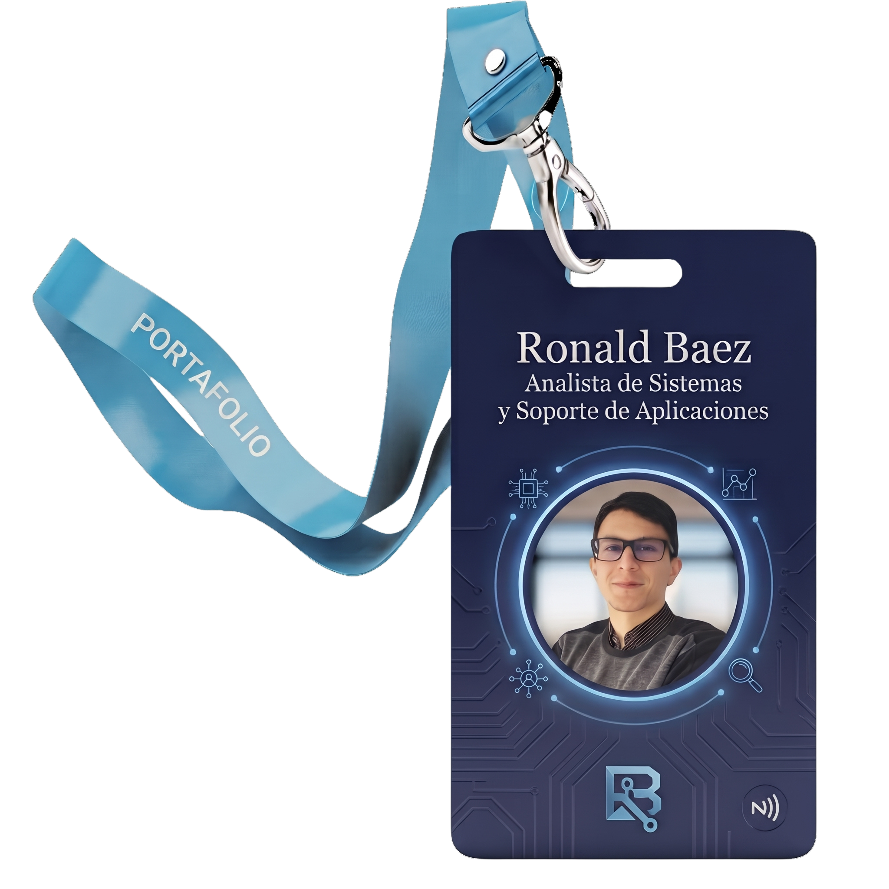

Diagnosticar
Correlación de logs, métricas, respuestas API, consultas SQL y comportamiento del usuario para reducir la incertidumbre.
logs · sql · rest · tracing
Soy Analista de Sistemas con experiencia en los sectores financiero y tecnológico, especializado en soporte de aplicaciones, análisis y resolución de incidentes, monitoreo de servicios y troubleshooting. Trabajo con Linux, SQL/MySQL, APIs REST, Postman, Jira, Google Cloud, microservicios, sistemas legacy y middleware. También aplico automatización de tareas, scripting e inteligencia artificial para documentación y optimización de procesos.

Un perfil que combina soporte, análisis y operación: entiendo el incidente, reúno evidencia técnica y acompaño la resolución hasta validar el servicio.
Correlación de logs, métricas, respuestas API, consultas SQL y comportamiento del usuario para reducir la incertidumbre.
logs · sql · rest · tracing
Validación de disponibilidad, seguimiento de servicios y control posterior a la resolución en entornos productivos.
monitoring · incident · verify
Documentación clara y escalamiento con evidencias hacia Desarrollo, QA, Infraestructura y áreas de negocio.
jira · remedy · agile · devops
Analista de Sistemas, Application Support N2/N3, Analista Funcional Ssr., IT Operations y Cloud Support.
support · functional · operations
Responsabilidad, pensamiento analítico, documentación, orientación al servicio y colaboración transversal.
scrum · kanban · devops
Seleccioná cada etapa para revisar funciones, contexto operativo y herramientas utilizadas.
Cada tecnología está vinculada con tareas concretas realizadas en soporte, operación y análisis.
No se encontraron herramientas con ese criterio en la categoría seleccionada.
Diagnóstico productivo, operación batch, servidores de aplicaciones y escalamiento técnico.
Disponibilidad, métricas, alertas, trazas y registros para detectar degradaciones.
Validación de datos, endpoints, payloads y flujos transaccionales.
Soporte a microservicios, funciones cloud y mantenimiento básico de código.
Seguimiento, documentación, priorización y escalamiento de incidentes y requerimientos.
Proyectos personales demostrativos basados en escenarios técnicos, sin información confidencial de empleadores.
Centraliza alerta, impacto, evidencias, responsables y cronología para ordenar el diagnóstico inicial.
auth-service con correlación de evidencias.Valida endpoints, códigos HTTP, latencia, payloads y estado de dependencias.
Colección de scripts para inventario, salud de equipos, análisis de logs e informes.
Simula una validación de transferencia combinando respuesta API, logs cloud y consulta SQL.
Datos simulados y ejecución segura: muestran el razonamiento técnico sin conectarse a sistemas reales.
Recopila especificaciones y estado del equipo.
PS> .\IT-Inventory.ps1
Certificaciones y cursos ordenados por fecha, del más reciente al más antiguo. Cada tarjeta enlaza con su fuente oficial.
Instituto Universitario de Tecnología de Maracaibo (IUTM)
Formación académica superior orientada al análisis de sistemas, ingeniería de software, arquitectura de computadoras, redes, administración de bases de datos y gestión operativa de infraestructura IT.